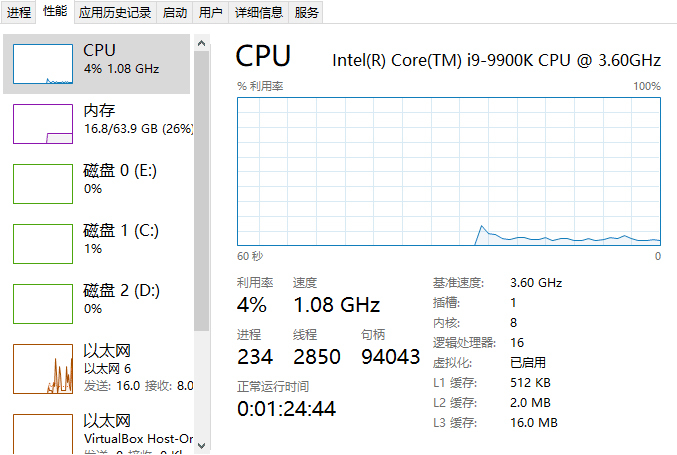
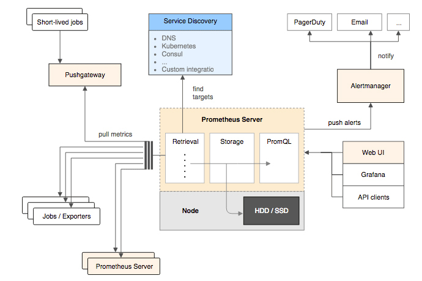
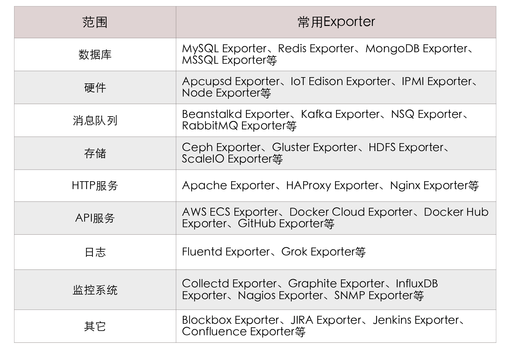

- 00 _导读 _ 什么是“The Fenix Project”？.md.html
- 00 开篇词 _ 如何构建一个可靠的分布式系统？.md.html
- 01 _ 原始分布式时代：Unix设计哲学下的服务探索.md.html
- 02 _ 单体系统时代：应用最广泛的架构风格.md.html
- 03 _ SOA时代：成功理论与失败实践.md.html
- 04 _ 微服务时代：SOA的革命者.md.html
- 05 _ 后微服务时代：跨越软件与硬件之间的界限.md.html
- 06 _ 无服务时代：“不分布式”云端系统的起点.md.html
- 07 _ 远程服务调用（上）：从本地方法到远程方法的桥梁.md.html
- 08 _ 远程服务调用（下）：如何选择适合自己的RPC框架？.md.html
- 09 _ RESTful服务（上）：从面向过程编程到面向资源编程.md.html
- 10 _ RESTful服务（下）：如何评价服务是否RESTful？.md.html
- 11 _ 本地事务如何实现原子性和持久性？.md.html
- 12 _ 本地事务如何实现隔离性？.md.html
- 13 _ 全局事务和共享事务是如何实现的？.md.html
- 14 _ 分布式事务之可靠消息队列.md.html
- 15 _ 分布式事务之TCC与SAGA.md.html
- 16 _ 域名解析系统，优化HTTP性能的第一步.md.html
- 17 _ 客户端缓存是如何帮助服务器分担流量的？.md.html
- 18 _ 传输链路，优化HTTP传输速度的小技巧.md.html
- 19 _ 如何利用内容分发网络来提高网络性能？.md.html
- 20 _ 常见的四层负载均衡的工作模式是怎样的？.md.html
- 21 _ 服务端缓存的三种属性.md.html
- 22 _ 分布式缓存如何与本地缓存配合，提高系统性能？.md.html
- 23 _ 认证：系统如何正确分辨操作用户的真实身份？.md.html
- 24 _ 授权（上）：系统如何确保授权的过程可靠？.md.html
- 25 _ 授权（下）：系统如何确保授权的结果可控？.md.html
- 26 _ 凭证：系统如何保证与用户之间的承诺是准确完整且不可抵赖的？.md.html
- 27 _ 保密：系统如何保证敏感数据无法被内外部人员窃取滥用？.md.html
- 28 _ 传输（上）：传输安全的基础，摘要、加密与签名.md.html
- 29 _ 传输（下）：数字证书与传输安全层.md.html
- 30 _ 验证：系统如何确保提交给服务的数据是安全的？.md.html
- 31 _ 分布式共识（上）：想用好分布式框架，先学会Paxos算法吧.md.html
- 32 _ 分布式共识（下）：Multi Paxos、Raft与Gossip，分布式领域的基石.md.html
- 33 _ 服务发现如何做到持续维护服务地址在动态运维中的时效性？.md.html
- 34 _ 路由凭什么作为微服务网关的基础职能？.md.html
- 35 _ 如何在客户端实现服务的负载均衡？.md.html
- 36 _ 面对程序故障，我们该做些什么？.md.html
- 37 _ 要实现某种容错策略，我们该怎么做？.md.html
- 38 _ 限流的目标与模式.md.html
- 39 _ 如何构建零信任网络安全？.md.html
- 40 _ 如何实现零信任网络下安全的服务访问？.md.html
- 41 _ 分布式架构中的可观测到底说的是什么？.md.html
- 42 _ 分析日志真的没那么简单.md.html
- 43 _ 一个完整的分布式追踪系统是什么样子的？.md.html
- 44 _ 聚合度量能给我们解决什么问题？.md.html
- 45 _ 模块导学：从微服务到云原生.md.html
- 46 _ 容器的崛起（上）：文件、访问、资源的隔离.md.html
- 47 _ 容器的崛起（下）：系统、应用、集群的封装.md.html
- 48 _ 以容器构建系统（上）：隔离与协作.md.html
- 49 _ 以容器构建系统（下）：韧性与弹性.md.html
- 50 _ 应用为中心的封装（上）：Kustomize与Helm.md.html
- 51 _ 应用为中心的封装（下）：Operator与OAM.md.html
- 52 _ Linux网络虚拟化（上）：信息是如何通过网络传输被另一个程序接收到的？.md.html
- 53 _ Linux网络虚拟化（下）：Docker所提供的容器通讯方案有哪些？.md.html
- 54 _ 容器网络与生态：与CNM竞争过后的CNI下的网络插件生态.md.html
- 55 _ 谈谈Kubernetes的存储设计理念.md.html
- 56 _ Kubernetes存储扩展架构：一个真实的存储系统如何接入或移除新存储设备？.md.html
- 57 _ Kubernetes存储生态系统：几种有代表性的CSI存储插件的实现.md.html
- 58 _ Kubernetes的资源模型与调度器设计.md.html
- 59 _ 透明通讯的涅槃（上）：通讯的成本.md.html
- 60 _ 透明通讯的涅槃（下）：控制平面与数据平面.md.html
- 61 _ 服务网格与生态：聊聊服务网格的两项标准规范.md.html
- 62 _ Fenix's Bookstore的前端工程.md.html
- 63 _ 基于Spring Boot的单体架构.md.html
- 64 _ 基于Spring Cloud的微服务架构.md.html
- 65 _ 基于Kubernetes的微服务架构.md.html
- 66 _ 基于Istio的服务网格架构.md.html
- 67 _ 基于云计算的无服务架构.md.html
- 春节特别放送（上）_ 有的放矢，事半功倍.md.html
- 春节特别放送（下）_ 积累沉淀，知行合一.md.html
- 用户故事 _ 詹应达：持续成长，不惧未来.md.html
- 结束语 _ 程序员之路.md.html
- 结课测试 _ 一套习题，测出你的掌握程度.md.html
- 捐赠
44 _ 聚合度量能给我们解决什么问题？
你好，我是周志明。这节课我们来探讨“可观测性”这个小章节的最后一个话题：聚合度量。
度量（Metrics）的目的是揭示系统的总体运行状态。相信你可能在一些电影里见过这样的场景：舰船的驾驶舱或者卫星发射中心的控制室，处在整个房间最显眼的位置，布满整面墙壁的巨型屏幕里显示着一个个指示器、仪表板与统计图表，沉稳端坐中央的指挥官看着屏幕上闪烁变化的指标，果断决策，下达命令……
而如果以上场景被改成指挥官双手在键盘上飞舞，双眼紧盯着日志或者追踪系统，试图判断出系统工作是否正常。这光想像一下，你都能感觉到一股身份与行为不一致的违和气息，由此可见度量与日志、追踪的差别。
简单来说，度量就是用经过聚合统计后的高维度信息，以最简单直观的形式来总结复杂的过程，为监控、预警提供决策支持。
我们大多数人的人生经历可能都会比较平淡，没有驾驶航母的经验，甚至连一颗卫星或者导弹都没有发射过，那就只好打开电脑，按CTRL+ALT+DEL呼出任务管理器，看看下面这个熟悉的界面，它也是一个非常具有代表性的度量系统。

Windows系统的任务管理器界面
在总体上，度量可以分为客户端的指标收集、服务端的存储查询以及终端的监控预警三个相对独立的过程，每个过程在系统中一般也会设置对应的组件来实现。
那么现在呢，你不妨先来看一下我在后面举例时会用到的Prometheus组件流程图，图中Prometheus Server左边的部分都属于客户端过程，而右边的部分就属于终端过程。

虽然说Prometheus在度量领域的统治力，暂时还不如日志领域中Elastic Stack的统治地位那么稳固，但在云原生时代里，它基本已经算得上是事实标准了。所以接下来，我就主要以Prometheus为例，给你介绍这三部分组件的总体思路、大致内容与理论标准。
指标收集
我们先来了解下客户端指标收集部分的核心思想。这一部分主要是解决两个问题：“如何定义指标”以及“如何将这些指标告诉服务端”。
如何定义指标？
首先我们来聊聊“如何定义指标”这个问题。乍一看你可能会觉得它应该是与目标系统密切相关的，必须根据实际情况才能讨论，但其实并不绝对。
要知道，无论目标是何种系统，它都具备了一些共性特征，虽然在确定目标系统前，我们无法决定要收集什么指标，但指标的数据类型（Metrics Types）是可数的，所有通用的度量系统都是面向指标的数据类型来设计的，现在我就来一一给你解读下：
- 计数度量器（Counter）：这是最好理解也是最常用的指标形式，计数器就是对有相同量纲、可加减数值的合计量。比如业务指标像销售额、货物库存量、职工人数等；技术指标像服务调用次数、网站访问人数等，它们都属于计数器指标。
- 瞬态度量器（Gauge）：瞬态度量器比计数器更简单，它就表示某个指标在某个时点的数值，连加减统计都不需要。比如当前Java虚拟机堆内存的使用量，这就是一个瞬态度量器；再比如，网站访问人数是计数器，而网站在线人数则是瞬态度量器。
- 吞吐率度量器（Meter）：顾名思义，它是用于统计单位时间的吞吐量，即单位时间内某个事件的发生次数。比如在交易系统中，常以TPS衡量事务吞吐率，即每秒发生了多少笔事务交易；再比如，港口的货运吞吐率常以“吨/每天”为单位计算，10万吨/天的港口通常要比1万吨/天的港口的货运规模更大。
- 直方图度量器（Histogram）：直方图就是指常见的二维统计图，它的两个坐标分别是统计样本和该样本对应的某个属性的度量，以长条图的形式记录具体数值。比如经济报告中，要衡量某个地区历年的GDP变化情况，常会以GDP为纵坐标、时间为横坐标构成直方图来呈现。
- 采样点分位图度量器（Quantile Summary）：分位图是统计学中通过比较各分位数的分布情况的工具，主要用来验证实际值与理论值的差距，评估理论值与实际值之间的拟合度。比如，我们说“高考成绩一般符合正态分布”，这句话的意思就是：高考成绩高低分的人数都比较少，中等成绩的比较多，按不同分数段来统计人数，得出的统计结果一般能够与正态分布的曲线较好地拟合。
- 除了以上常见的度量器之外，还有Timer、Set、Fast Compass、Cluster Histogram等其他各种度量器，采用不同的度量系统，支持度量器类型的范围肯定会有所差别，比如Prometheus就支持了上面提到的五种度量器中的Counter、Gauge、Histogram和Summary四种。
如何将这些指标告诉服务端？
然后是针对“如何将这些指标告诉服务端”这个问题，它通常有两种解决方案：拉取式采集（Pull-Based Metrics Collection）和推送式采集（Push-Based Metrics Collection）。
所谓Pull是指度量系统主动从目标系统中拉取指标；相对地，Push就是由目标系统主动向度量系统推送指标。
这两种方式实际上并没有绝对的好坏优劣，以前很多老牌的度量系统，比如Ganglia、Graphite、StatsD等是基于Push的，而以Prometheus、Datadog、Collectd为代表的另一派度量系统则青睐Pull式采集（Prometheus官方解释选择Pull的原因）。另外你也要知道，对于是要选择Push还是Pull，不仅是在度量中才有，所有涉及到客户端和服务端通讯的场景，都会涉及到该谁主动的问题，上一节课讲的追踪系统也是如此。
不过一般来说，度量系统只会支持其中一种指标采集方式，这是因为度量系统的网络连接数量，以及对应的线程或者协程数可能非常庞大，如何采集指标将直接影响到整个度量系统的架构设计。
然而，Prometheus在基于Pull架构的同时，还能够有限度地兼容Push式采集，这是为啥呢？原因是它有Push Gateway的存在。
如下图所示，这是一个位于Prometheus Server外部的相对独立的中介模块，它会把外部推送来的指标放到Push Gateway中暂存，然后再等候Prometheus Server从Push Gateway中去拉取。
Prometheus设计Push Gateway的本意是为了解决Pull的一些固有缺陷，比如目标系统位于内网，需要通过NAT访问外网，而外网的Prometheus是无法主动连接目标系统的，这就只能由目标系统主动推送数据；又比如某些小型短生命周期服务，可能还等不及Prometheus来拉取，服务就已经结束运行了，因此也只能由服务自己Push来保证度量的及时和准确。
而在由Push和Pull决定完该谁主动以后，另一个问题就是：指标应该通过怎样的网络访问协议、取数接口、数据结构来获取呢？
跟计算机科学中其他类似的问题一样，人们一贯的解决方向是“定义规范”，应该由行业组织和主流厂商一起协商出专门用于度量的协议，目标系统按照协议与度量系统交互。比如说，网络管理中的SNMP、Windows硬件的WMI，以及第41讲中提到的Java的JMX都属于这种思路的产物。
但是，定义标准这个办法在度量领域中其实没有那么有效，前面列举的这些度量协议，只是在特定的一小块领域里流行过。
要究其原因的话，一方面是因为业务系统要使用这些协议并不容易，你可以想像一下，让订单金额存到SNMP中，让Golang的系统把指标放到JMX Bean里，即便技术上可行，这也不像是正常程序员会干的事；而另一方面，度量系统又不会甘心局限于某个领域，成为某项业务的附属品。
另外我们也要明确一个事实，度量面向的是广义上的信息系统，它横跨存储（日志、文件、数据库）、通讯（消息、网络）、中间件（HTTP服务、API服务），直到系统本身的业务指标，甚至还会包括度量系统本身（部署两个独立的Prometheus互相监控是很常见的）。
所以，这些度量协议其实都没有成为最正确答案的希望。
如此一来，既然没有了标准，有一些度量系统，比如老牌的Zabbix就选择同时支持了SNMP、JMX、IPMI等多种不同的度量协议。而另一些以Prometheus为代表的度量系统就相对强硬，它们不支持任何一种协议，只允许通过HTTP访问度量端点这一种访问方式。如果目标提供了HTTP的度量端点（如Kubernetes、Etcd等本身就带有Prometheus的Client Library）就直接访问，否则就需要一个专门的Exporter来充当媒介。
这里的Exporter是Prometheus提出的概念，它是目标应用的代表，它既可以独立运行，也可以与应用运行在同一个进程中，只要集成Prometheus的Client Library就可以了。
Exporter的作用就是以HTTP协议（Prometheus在2.0版本之前支持过Protocol Buffer，目前已不再支持）返回符合Prometheus格式要求的文本数据给Prometheus服务器。得益于Prometheus的良好社区生态，现在已经有大量、各种用途的Exporter，让Prometheus的监控范围几乎能涵盖到所有用户关心的目标，绝大多数用户都只需要针对自己系统业务方面的度量指标编写Exporter即可。你可以参考下这里给出的表格：

另外顺便一提，在前面我提到了一堆没有希望成为最终答案的协议，比如SNMP、WMI等等。不过现在一种名为OpenMetrics的度量规范正逐渐从Prometheus的数据格式中分离出来，有望成为监控数据格式的国际标准，最终结果究竟如何，要看Prometheus本身的发展情况，还有OpenTelemetry与OpenMetrics的关系如何协调。
存储查询
好，那么当指标从目标系统采集过来了之后，就应该存储在度量系统中，以便被后续的分析界面、监控预警所使用。
存储数据对于计算机软件来说其实是司空见惯的操作，但如果用传统关系数据库的思路来解决度量系统的存储，效果可能不会太理想。
我举个例子，假设你要建设一个中等规模、有着200个节点的微服务系统，每个节点要采集的存储、网络、中间件和业务等各种指标加一起，也按200个来计算，监控的频率如果按秒为单位的话，一天时间内就会产生超过34亿条记录，而对于这个结果你可能会感到非常意外：
200（节点）× 200（指标）× 86400（秒）= 3,456,000,000（记录）
因为在实际情况中，大多数这种200节点规模的系统，本身一天的生产数据都远到不了34亿条，那么建设度量系统，肯定不能让度量反倒成了业务系统的负担。可见，度量的存储是需要专门研究解决的问题。至于具体要如何解决，让我们先来观察一段Prometheus的真实度量数据吧：
{
// 时间戳
"timestamp": 1599117392,
// 指标名称
"metric": "total_website_visitors",
// 标签组
"tags": {
"host": "icyfenix.cn",
"job": "prometheus"
},
// 指标值
"value": 10086
}
通过观察，我们可以发现这段度量数据的特征：每一个度量指标由时间戳、名称、值和一组标签构成，除了时间之外，指标不与任何其他因素相关。
当然，指标的数据总量固然是不小的，但它没有嵌套、没有关联、没有主外键，不必关心范式和事务，这些就都是可以针对性优化的地方。事实上，业界也早就有了专门针对该类型数据的数据库，即“时序数据库”（Time Series Database）。
额外知识：时序数据库-
时序数据库是用于存储跟随时间而变化的数据，并且以时间（时间点或者时间区间）来建立索引的数据库。-
时序数据库最早是应用于工业（电力行业、化工行业）应用的各类型实时监测、检查与分析设备所采集、产生的数据，这些工业数据的典型特点是产生频率快（每一个监测点一秒钟内可产生多条数据）、严重依赖于采集时间（每一条数据均要求对应唯一的时间）、测点多信息量大（常规的实时监测系统均可达到成千上万的监测点，监测点每秒钟都在产生数据）。-
时间序列数据是历史烙印，它具有不变性、唯一性、有序性。时序数据库同时具有数据结构简单、数据量大的特点。
我们应该注意到，存储数据库在写操作时，时序数据通常只是追加，很少删改或者根本不允许删改。因此，针对数据热点只集中在近期数据、多写少读、几乎不删改、数据只顺序追加等特点，时序数据库被允许可以做出很激进的存储、访问和保留策略（Retention Policies）：
- 以日志结构的合并树（Log Structured Merge Tree，LSM-Tree）代替传统关系型数据库中的B+Tree作为存储结构，LSM适合的应用场景就是写多读少，且几乎不删改的数据。
- 设置激进的数据保留策略，比如根据过期时间（TTL），自动删除相关数据以节省存储空间，同时提高查询性能。对于普通的数据库来说，数据会存储一段时间后被自动删除的这个做法，可以说是不可想象的。
- 对数据进行再采样（Resampling）以节省空间，比如最近几天的数据可能需要精确到秒，而查询一个月前的数据只需要精确到天，查询一年前的数据只要精确到周就够了，这样将数据重新采样汇总，就极大地节省了存储空间。
而除此之外，时序数据库中甚至还有一种并不罕见却更加极端的形式，叫做轮替型数据库（Round Robin Database，RRD），它是以环形缓冲（在“服务端缓存”一节介绍过）的思路实现，只能存储固定数量的最新数据，超期或超过容量的数据就会被轮替覆盖，因此它也有着固定的数据库容量，却能接受无限量的数据输入。
所以，Prometheus服务端自己就内置了一个强大的时序数据库实现，我说它“强大”并不是客气，在DB-Engines中近几年它的排名就在不断提升，目前已经跃居时序数据库排行榜的前三。
这个时序数据库提供了一个名为PromQL的数据查询语言，能对时序数据进行丰富的查询、聚合以及逻辑运算。当然了，某些时序库（如排名第一的InfluxDB）也会提供类SQL风格的查询，但PromQL不是，它是一套完全由Prometheus自己定制的数据查询DSL，写起来的风格有点像带运算与函数支持的CSS选择器。比如，我要查找网站icyfenix.cn的访问人数的话，会是如下写法：
// 查询命令：
total_website_visitors{host=“icyfenix.cn”}
// 返回结果：
total_website_visitors{host=“icyfenix.cn”,job="prometheus"}=(10086)
这样，通过PromQL就可以轻易实现指标之间的运算、聚合、统计等操作，在查询界面中也往往需要通过PromQL计算多种指标的统计结果，才能满足监控的需要，语法方面的细节我就不详细展开了，具体你可以参考Prometheus的文档手册。
最后我还想补充说明一下，时序数据库对度量系统来说确实是很合适的选择，但并不是说绝对只有用时序数据库才能解决度量指标的存储问题，Prometheus流行之前最老牌的度量系统Zabbix，用的就是传统关系数据库来存储指标。
好，接下来我们继续探讨聚合度量的第三个过程：终端的监控预警。
监控预警
首先要知道，指标度量是手段，而最终目的是要做分析和预警。
界面分析和监控预警是与用户更加贴近的功能模块，但对度量系统本身而言，它们都属于相对外围的功能。与追踪系统的情况类似，广义上的度量系统由面向目标系统进行指标采集的客户端（Client，与目标系统进程在一起的Agent，或者代表目标系统的Exporter等都可归为客户端），负责调度、存储和提供查询能力的服务端（Server，Prometheus的服务端是带存储的，但也有很多度量服务端需要配合独立的存储来使用），以及面向最终用户的终端（Backend，UI界面、监控预警功能等都归为终端）组成；而狭义上的度量系统就只包括客户端和服务端，不包含终端。
那么按照定义，Prometheus应该算是处于狭义和广义的度量系统之间，尽管它确实内置了一个界面解决方案“Console Template”，以模版和JavaScript接口的形式提供了一系列预设的组件（菜单、图表等），让用户编写一段简单的脚本就可以实现可用的监控功能。不过这种可用程度，往往不足以支撑正规的生产部署，只能说是为把度量功能嵌入到系统的某个子系统中，提供了一定的便利。
因而在生产环境下，大多是Prometheus配合Grafana来进行展示的，这是Prometheus官方推荐的组合方案。但该组合也并非唯一的选择，如果你要搭配Klbana甚至SkyWalking（8.x版之后的SkyWalking支持从Prometheus获取度量数据）来使用，也都是完全可行的。
另外，良好的可视化能力对于提升度量系统的产品力也非常重要，长期趋势分析（比如根据对磁盘增长趋势的观察，判断什么时候需要扩容）、对照分析（比如版本升级后对比新旧版本的性能、资源消耗等方面的差异）、故障分析（不仅从日志、追踪自底向上可以分析故障，高维度的度量指标也可能自顶向下寻找到问题的端倪）等分析工作，既需要度量指标的持续收集、统计，往往还需要对数据进行可视化，这样才能让人更容易地从数据中挖掘规律，毕竟数据最终还是要为人类服务的。
而除了为分析、决策、故障定位等提供支持的用户界面外，度量信息的另一种主要的消费途径就是用来做预警。比如你希望当磁盘消耗超过90%时，给你发送一封邮件或者是一条微信消息，通知管理员过来处理，这就是一种预警。
Prometheus提供了专门用于预警的Alert Manager，我们将Alert Manager与Prometheus关联后，可以设置某个指标在多长时间内、达到何种条件就会触发预警状态，在触发预警后，Alert Manager就会根据路由中配置的接收器，比如邮件接收器、Slack接收器、微信接收器，或者更通用的WebHook接收器等来自动通知我们。
小结
今天是“可观测性”章节的最后一节课，可观测性作为控制理论中的一个概念，从1960年代起就已经存在了，虽然它针对信息系统和分布式服务的适用性，是最近若干年中新发现的，但在某种程度上，这也算是过去20年对这些系统的监控方式的演变产物。
那么学完了今天这节课，你需要记住一个要点，即传统监控和可观测性之间的关键区别在于：可观测性是系统或服务内在的固有属性，而不是在系统之外对系统所做出的额外增强，后者是传统监控的处理思路。
除此之外，构建具有可观测性的服务，也是构建健壮服务不可缺少的属性，这是分布式系统架构师的职责。那么作为服务开发者和设计者，我们应该在其建设期间，就要设想控制系统会发出哪些信号、如何接收和存储这些信号，以及如何使用它们，以确保在用户能在受到影响之前了解问题、能使用度量数据来更好地了解系统的健康状况和状态。
一课一思
在你设计系统时，是否考虑过要对外部暴露哪些可观测的属性？你通常会暴露哪些数据？是以什么方式暴露的呢？欢迎在留言区分享你的见解和做法。
如果你觉得有收获，也欢迎把今天的内容分享给更多的朋友。感谢你的阅读，我们下一讲再见。
© 2019 - 2023 Liangliang Lee. Powered by gin and hexo-theme-book.